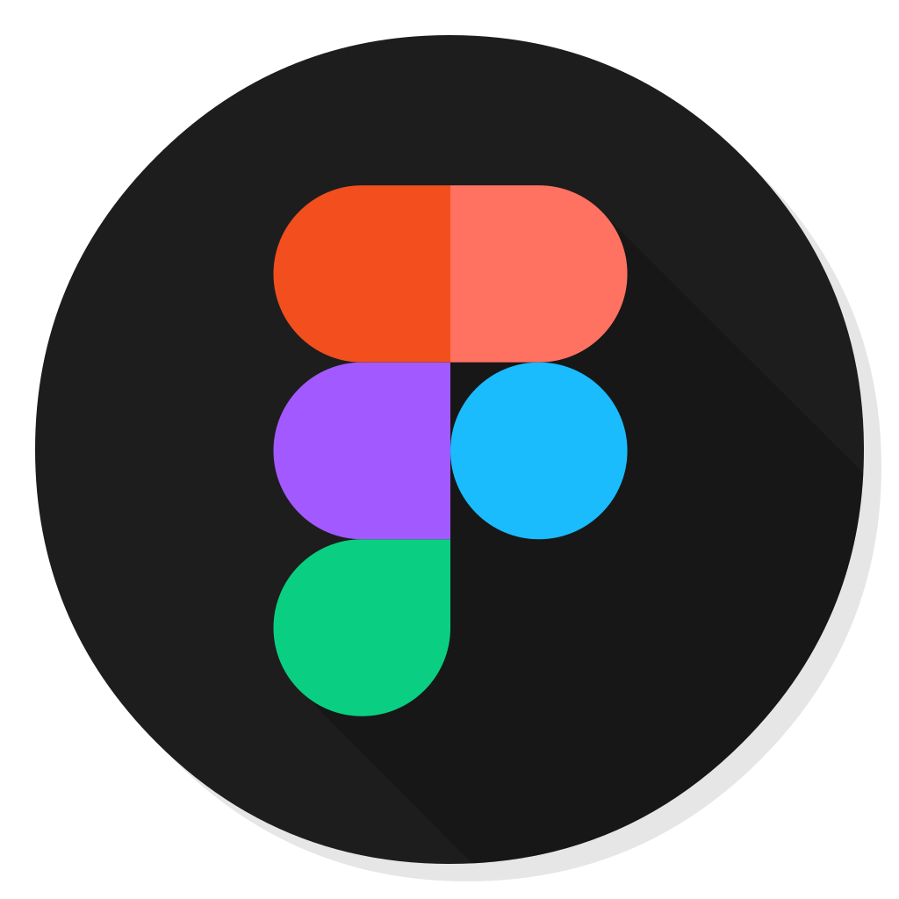

Low Fidelity Wireframes
Using the user flow our group created wireframes to reflect the process of going through the app.

BudgetUni is an expense tracker and budget manager aimed to help college students and young adults solve the problem of overspending by keeping track of everyday and recurring expenses. Its main goal is to help users learn about personal finance and improve financial literacy by organizing personal expenses. Its most unique feature also accomplishes this goal by allowing users to share with their friends and family to track and set budget goals together.
Group project
UX designer
5 months
Spring 2023
Figma
When our group first chose this prompt, we began by listing all the possible and necessary features that came to mind. These ideas were then organized by similarity.
Our group conducted 20-minute interviews in person or over Zoom, with one interviewer and one moderator. Participants consisted of University of Miami students, family, and friends all ages 19-30.
The Interviews yielded the following insights and recommendations.
Imani is a college student who is tired of paying for Ubers every time she goes out. She needs a platform that helps her divide her income so she knows where to cut back and can allocate that money into a savings for a new car.
With all of the features our group had in mind we developed an annotated site map. The user flow is a snapshot of the larger site map, specifically focusing on the needs of the user persona that was created.
Using the user flow our group created wireframes to reflect the process of going through the app.
As the UX design process progressed, our group settled on a clean typeface and a color scheme that was closely associated with finance and piggy banks.

Using the low-fidelity wireframes and style guide our group further developed a high-fidelity version to be used for user testing.
After user testing and a heuristic evaluation by our group we were left with final recommendations to address